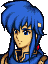

共通1

セリスよ、よくやった(Levin (Strategist)): Celice, well done.
よく苦しみにたえてここまで来たな(Levin (Strategist)): You endured such suffering, to make it all the way here.

レヴィン、戦いは勝利に終わったけど(Celice): Levin, the battle has ended in victory, but
世界は荒れ果ててしまった(Celice): the world has been left in ruins.
私達はこれからどうすればいいのだろう(Celice): What should we do from here, I wonder.
荒れ果てた国々を立て直すためには(Levin (Strategist)): To rebuild these devastated nations,
すべての人が力を合わせて(Levin (Strategist)): everyone must join their strength together,
苦労をわかちあわねばならない(Levin (Strategist)): and share in each other's hardships.
そのためにはリーダーが必要だ(Levin (Strategist)): For that, leaders will be needed.
聖戦士の血を引く者は、(Levin (Strategist)): Those who carry the blood of the holy warriors
それぞれの国に戻り王となる(Levin (Strategist)): will each return to their own nations and become king.
そして、みなで協力しあい(Levin (Strategist)): And then, with everyone cooperating together,
だれもが幸せになれる(Levin (Strategist)): you will build a new world
新しい世界を築くのだ(Levin (Strategist)): where everyone can find happiness.
新しい世界・・・(Celice): A new world...
そうだ、そしてセリスよ、(Levin (Strategist)): That's right. And Celice,
おまえはこのグランベルの王となるのだ(Levin (Strategist)): you will become the king of this Grannvale.
おまえには、グランベル王として(Levin (Strategist)): As King of Grannvale, you bear
この世界のすべてをみちびく(Levin (Strategist)): the responsibility of guiding
責任があるのだぞ(Levin (Strategist)): this entire world.
私がグランベルの王に！？(Celice): Me, king of Grannvale!?
※ユリア生存時そうだ— (if Julia is alive) (Levin (Strategist)): That's right.
グランベル王家の血を受け継ぐ者は、(Levin (Strategist)): Those who carry on the blood of the Grannvale royal family
もはや、おまえたちだけだ(Levin (Strategist)): are now only the two of you.
おまえは、ユリアとともに(Levin (Strategist)): You, together with Julia,
失われた者達の遺志を継がねばならぬ(Levin (Strategist)): must carry on the will of those who were lost.
人々は、おまえを見守っている(Levin (Strategist)): The people are watching over you.
彼らが求めた光を忘れてはならない(Levin (Strategist)): Never forget the light they sought.
はい・・・(Celice): Yes.........
わかりました、レヴィン王(Celice): Understood, King Levin.
この力の限り、やってみますユリア、(Celice): I'll do everything within my power to try. Julia,
おまえもいいな？(Celice): you too, are you with me?

はい、わたしも(Julia): Yes, I too...
セリス様・・・(Julia): Lord Celice.........
いえ、にいさまをお助けしたい(Julia): No — I want to help my brother.
たとえどんなに辛くても(Julia): No matter how painful it may be,
わたしは逃げたりしません・・・(Julia): I will not run away.........
※ユリア死亡時そうだ— (if Julia has died) (Levin (Strategist)): That's right.
グランベル王家の血を受け継ぐ者は、(Levin (Strategist)): Those who carry on the blood of the Grannvale royal family
もはや、おまえとユリアだけしかいない(Levin (Strategist)): are now only you and Julia — no, only you remain.
だがそのユリアは戦いの中に消えた(Levin (Strategist)): But Julia vanished in the midst of the battle.
ユリア・・・守ると約束したのに・・・(Levin (Strategist)): Julia... I promised to protect her, and yet...
私の責任だ・・・(Levin (Strategist)): It is my own failing...
セリスよ、(Levin (Strategist)): Celice,
ユリアの死をむだにしてはならぬ(Levin (Strategist)): you must not let Julia's death be in vain.
あの子は、(Levin (Strategist)): That girl
悲惨な運命にもたえて、戦い続けた(Levin (Strategist)): endured a tragic fate, and kept fighting to the very end.
それは、自らのあやまちになやみ(Levin (Strategist)): That was because she inherited the heart
死んでいった母、ディアドラの心を(Levin (Strategist)): of her mother, Deirdre, who died
受け継いだからだ(Levin (Strategist)): tormented by her own mistake.
セリスよ、わかるな(Levin (Strategist)): Celice, you understand, don't you.
おまえは、失われた者達の遺志を(Levin (Strategist)): You must carry on the will
継がねばならぬ(Levin (Strategist)): of those who were lost.
人々は、おまえを見守っている(Levin (Strategist)): The people are watching over you.
彼らが求めた光を忘れてはならない(Levin (Strategist)): Never forget the light they sought.
はい・・・(Celice): Yes.........
わかりました、レヴィン王(Celice): Understood, King Levin.
ユリアにつぐなうためにも(Celice): To make up for Julia too,
この力の限り、やってみます(Celice): I'll do everything within my power to try.
共通2
・・・ではセリスよ、名残は惜しいが(Levin (Strategist)): ...Well then, Celice, it pains me to part,
私も旅立つとしよう(Levin (Strategist)): but I too shall set out on my own journey now.
レヴィン・・・ありがとう・・・、(Celice): Levin... thank you...
あなたは、私たち幼い者を(Celice): You, who watched over us
ずっと見守っていてくれた(Celice): while we were still young, the whole time —
本当に、感謝しています(Celice): I am truly grateful.
私は、みずからの務めを果たしたまで(Levin (Strategist)): I merely fulfilled my own duty, that's all.
私は風、暖かい光を導く風(Levin (Strategist)): I am the wind — the wind that guides a warm light.
そして光は、(Levin (Strategist)): And that light,
おまえ達一人一人の心の中にある(Levin (Strategist)): lives within the heart of each and every one of you.
はい、わかっています(Celice): Yes, I understand.
竜族は人間世界に関与することを(Celice): I've heard that the dragon tribe fears
恐れているとききました(Celice): involving itself in the affairs of the human world.
でも、あなたは、その掟を破ってまで(Celice): And yet, you broke that very law
われらを導いてくれた(Celice): to guide us all this way.
私たちは、この大地があるかぎり、(Celice): For as long as this earth endures,
あなたのご恩を忘れません(Celice): we will never forget the debt we owe you.
レヴィン・・・いや・・・(Celice): Levin... no...
はるかなる異国の戦士、(Celice): far-traveled warrior of a distant land,
風のフォルセティよ・・・(Celice): Forseti of the wind.........